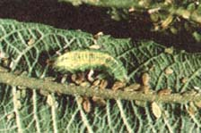
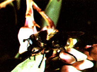
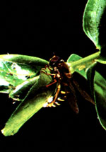
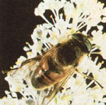

Here's the thirteenth in a series of articles that will help you tell friend from foe in your garden.
In MOTHER NO. 89, we discussed the tachinid fly, whose larvae are beneficial parasites that prey upon many garden pests. And, now that you've learned to examine your potential victims before wielding a flyswatter, I'd like to introduce you to another group of beneficial flies.
The hover fly clan (family Syrphidae) includes about 950 species in North America (and some 4,000 worldwide), several of which are common in the garden. Hover flies are best known (and were named) for their habit of hovering above flowers like miniature hummingbirds. Their bodies remain motionless while their wings beat at a breakneck pace. These aerial acrobats are also known as syrphid flies (from their scientific name) and flower flies (from the adults' affinity for flower nectar).
Hover flies are valuable to gardeners because the larvae of many species prey on aphids. In fact, these immature insects are almost as effective as ladybird beetles or green lacewings in controlling an aphid population. Also, adult hover flies spend a great deal of time visiting flowers and are thus effective pollinators. (Some researchers rank them just behind the honeybee in this respect.)
Many species of adult hover flies bear an uncanny resemblance to either yellow jackets, honeybees, bumblebees, or various wasps. In fact, most gardeners would be hard-pressed to tell the difference between the stinging insects and their look-alikes. Hover flies, however, can be distinguished by their shorter antennae and the fact that, like other true flies, they have but one pair of wings.
Such resemblance of an innocuous species to a stinging species is known as Batesian mimicry, and serves the purpose of protection for the unarmed imitator: Many creatures (including Homo sapiens) avoid boldly colored insects, either instinctively or as a result of having been stung, and thus also shy away from the mimics. Rare is the gardener who hasn't been fooled into yielding the right of way to one of these superb tricksters.
The feeding habits of the sluglike hover fly larvae are almost as variable as the physical characteristics of the adults. But of prime interest to gardeners are those species of larvae that prey on aphids and other softbodied pests. These predators come in many colors, but all take the typical maggot larval forma more or less cylindrical body that tapers toward the head.
While maggots are almost always legless, and swim or burrow through their food, the larvae of many of the hover flies have evolved stubby protrusions on their undersides that serve to support and transport the creatures as they crawl over vegetation in search of prey. In some instances, I've found these larvae to be the predominant natural control in a given aphid population.
The most interesting maggots in the hover fly family are the aquatic larvae of the genus Eristalis, called rat-tailed larvae. These little brutes look something like the garden-variety larvae, but sport long, tail-like breathing tubes that telescope to the water's surface for oxygen. These fascinating creatures are often found in slow-moving polluted streams and in stagnant ponds that are fouled with decaying organic matter. They're also found in fluid or semifluid animal excrement. The adult Eristalis bears a remarkable resemblance to the honeybee.
The moral of this little story is that you can't tell a fly by its hover. Consequently, for the sake of your garden, don't kill any colorful hovering insect. Whether it's actually a stinging hymenopteran, or merely a harmless hover fly in protective costume, the little creature is more valuable alive than dead.
While maggots are almost always legless, and swim or burrow through their food, the larvae of many of the hover flies have evolved stubby protrusions on their undersides that serve to support and transport the creatures as they crawl over vegetation in search of prey. In some instances, I've found these larvae to be the predominant natural control in a given aphid population.
The most interesting maggots in the hover fly family are the aquatic larvae of the genus Eristalis, called rat-tailed larvae. These little brutes look something like the garden-variety larvae, but sport long, tail-like breathing tubes that telescope to the water's surface for oxygen. These fascinating creatures are often found in slow-moving polluted streams and in stagnant ponds that are fouled with decaying organic matter. They're also found in fluid or semifluid animal excrement. The adult Eristalis bears a remarkable resemblance to the honeybee.
The moral of this little story is that you can't tell a fly by its hover. Consequently, for the sake of your garden, don't kill any colorful hovering insect. Whether it's actually a stinging hymenopteran, or merely a harmless hover fly in protective costume, the little creature is more valuable alive than dead.
|
 The sluglike larva of a hover fly -like a wolf among sheep-searches for a fat aphid to satisfy its voracious appetite. |
 Is this a bumblebee or a hover fly? The answer is found by looking at the antennae. |
 A garden-variety hover fly lays its eggs near a colony of aphids. Note that the insect bears a striking resemblance to a wasp. |
|
 The adult Eristalis hover fly. The insect's resemblance to the common honeybee is cvery bit as functional as it is remarkable. |
|
|